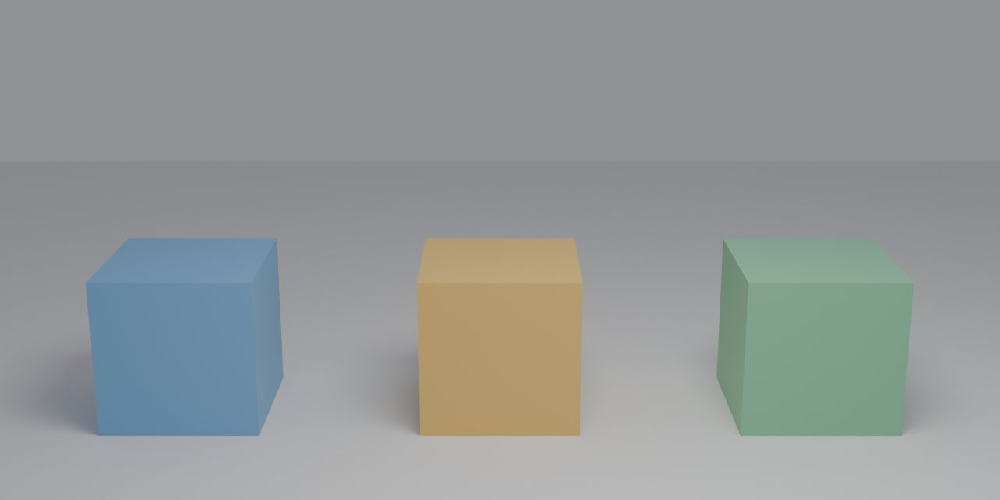

Bonus lesson
The 3D Cursor and Snap
The 3D Cursor is the red and white crosshair circle in the 3D Viewport. The Blender manual describes it as a point in space with a location and a rotation. Its most common job is simple: new objects are added where the cursor is.
1. New objects appear at the cursor
By default the cursor sits at the center of the scene, the world origin. Add a cube with Shift + A and it lands there. Move the cursor first, and the next object appears at the new spot.

2. Place the cursor
Select the Cursor tool in the Toolbar and click in the scene, or hold Shift and right-click with any tool. For accuracy, the manual suggests using two perpendicular orthogonal views, such as Top (Numpad 7) and Front (Numpad 1), so you set two axes in one view and the depth in the other.
3. Snap with Shift+S
Press Shift + S to open the Snap menu. You can also find it under Object > Snap. According to the manual, the cursor options include:
Cursor to Selected puts the cursor at the center of your selection. Cursor to World Origin puts it back at 0, 0, 0. Cursor to Active puts it at the origin of the active object. Cursor to Grid uses the nearest grid point.
The same menu also moves objects: Selection to Cursor moves the selected objects to the cursor, and Selection to Grid snaps them to the nearest grid point.
Read the manual pages on the 3D Cursor and Snap.
Link to the origin lesson
In the previous lesson, Origin to 3D Cursor moved an object's origin to the cursor. Now you know how to put the cursor on a corner or edge first.
Exercise
Add a cube, move it with G, X, 4, then use Snap > Cursor to Selected. Add a second cube and see where it appears. Finish with Snap > Cursor to World Origin and add a third.